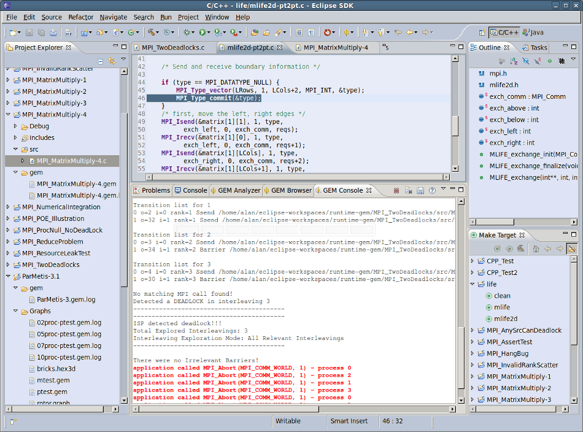

|
|
Console View |
Before formally verifying an MPI C/C++ application, the number of processes needs to be set for the verification run. You will also need to know how to run GEM itself. The links below detail these processes:
When GEM has finished the verification of your MPI C/C++ application, the Console, Browser and Analyzer Views will all be opened and depending on what is specified in the GEM Preference Page, one of these views will be brought to the foreground and given the active focus.
The Console View serves as an informal progress monitor while GEM is running — a status bar of sorts.
The actual time to formally verify any MPI application is essentially unknown and hence no actual Progress Monitor object.
It may be useful to see STDOUT & STDERR to know when a verification run is complete. The Console
View also gives the user the opportunity to cancel stalled or long-running operations with the standard Eclipse
cancel button  .
.
The image below shows what the Console View might look like followed by an explanation of its components.
Note: On the GEM Preference Page, you can specify whether you want new output to replace the older, or if new output should be appended to the older output.
Terminate Operation - Forcibly terminates the current GEM operation
Note: This same functionality can be obtained through the Console View context and pull-down menus.
Back to Top | Back to Table of Contents
School of Computing * 50 S. Central Campus Dr. Rm. 3190 * Salt Lake City, UT
84112 * isp-dev@cs.utah.edu
License